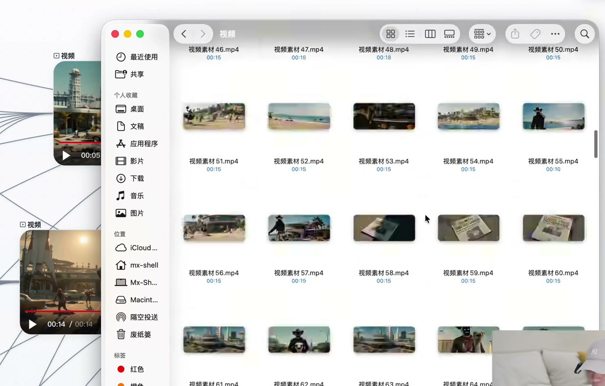

SELECTION WORKSPACE / TAKE REVIEW
单镜头候选池
不押注一次生成，用多个候选换取可比较的选择

同一镜头
多次生成
按标准留片
多次生成
按标准留片
SOURCE FRAME · 25:20
01 / TAKE同一个镜头
02 / TAKE并行生成
03 / TAKE逐条看片
04 / TAKE保留可用段
CHECK 01主体清楚
CHECK 02关键动作成立
CHECK 03镜头势能可接
CHECK 04光效不破坏连续性
CASE 13 · 00:25:20
render_mode: hybrid
05 / 10